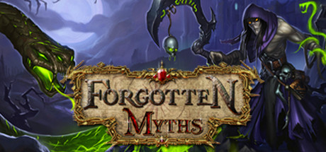

Forgotten Myths CCG
Forgotten Myths CCG
Details
|  | |
| Playtime | Not Played |
| Last Activity | Never |
| Added | 06/06/2016 |
| Modified | Never |
| Completion Status | Not Played |
| Source | Steam |
| Platform | PC |
| Release Date | 21/03/2016 |
| Community Score | 51 |
| Critic Score | |
| User Score | |
| Genre | Free to Play Indie Strategy |
| Developer | Anchora Games Dream Harvesters |
| Publisher | Anchora Games |
| Feature | Cross-Platform Multiplayer In-App Purchases Multiplayer Single Player |
| Links | PCGamingWiki Community Hub Discussions Guides Store Page News |
Description
Forgotten Myths is a free to play online collectible card game that incorporates deck building, card collection and strategic gameplay in a fantastic historical background incorporating several civilizations, myths and legends in the same storyline.
Features
Free to Play – You can acquire every card in-game by buying booster packs using earned currency, as long as you can devote more time in the game. This is the good free to play, no "energy gates" or "exclusive to buying with real world cash" cards.
Doma City, 3D Starting Zone – Players will be immersed in this 3D environment where they will be able to access main game features.
RPG Style Level and Rank Progression – You will be able to advance in levels and ranks to unlock special content and rewards, and compete in monthly leader boards.
Guilds – Form your guild, gather your friends and challenge other guilds to reach the top! Work as a team, wage guild wars, and unlock special guild cards.
Tournaments – We are designing Draft, and Sealed tournament modes, where you can enter, defeat your opponents, and win special rewards!
"Duel" Mode – A hard core duel match mode, where players will be able to bet cards from their collections against other players in a "winner takes all" duel.
"Multiplayer Co-op" Mode – We are designing a special game mode where you will fight against dreadful monsters and sinister characters in a co-op mode with groups of 2 or 4.
Immersing 3D Effects – Majority of the cards in Forgotten Myths have a specially designed 3D effect associated with an action or an ability; this is the true evolution of Trading Card Games to Digital.
Simultaneous Gameplay – Each attack turn is taken at the same time allowing for constant interaction and positioning tactics.
Remote Turn-Based Multiplayer – Play games with anyone in the world, from anywhere with internet access.
Hardcore Strategy – Most digital trading card games have oversimplified and gone all mainstream with their game mechanics. We've done the opposite and increased strategic depth by including positioning, and allowing different card types on the field.
Comprehensive Ever Changing Single Player Campaign – We have in depth Single Player Campaigns, that will have new maps, AIs and new quests added to it frequently.
Transformable Battlefields – The default 3D Battlefield can be changed by unlocking quest rewards that allows you to completely change or customize the table top battlefield.
Don't forget to visit http://forgottenmyths.com for game guide, media, full card list and more!
Features
Free to Play – You can acquire every card in-game by buying booster packs using earned currency, as long as you can devote more time in the game. This is the good free to play, no "energy gates" or "exclusive to buying with real world cash" cards.
Doma City, 3D Starting Zone – Players will be immersed in this 3D environment where they will be able to access main game features.
RPG Style Level and Rank Progression – You will be able to advance in levels and ranks to unlock special content and rewards, and compete in monthly leader boards.
Guilds – Form your guild, gather your friends and challenge other guilds to reach the top! Work as a team, wage guild wars, and unlock special guild cards.
Tournaments – We are designing Draft, and Sealed tournament modes, where you can enter, defeat your opponents, and win special rewards!
"Duel" Mode – A hard core duel match mode, where players will be able to bet cards from their collections against other players in a "winner takes all" duel.
"Multiplayer Co-op" Mode – We are designing a special game mode where you will fight against dreadful monsters and sinister characters in a co-op mode with groups of 2 or 4.
Immersing 3D Effects – Majority of the cards in Forgotten Myths have a specially designed 3D effect associated with an action or an ability; this is the true evolution of Trading Card Games to Digital.
Simultaneous Gameplay – Each attack turn is taken at the same time allowing for constant interaction and positioning tactics.
Remote Turn-Based Multiplayer – Play games with anyone in the world, from anywhere with internet access.
Hardcore Strategy – Most digital trading card games have oversimplified and gone all mainstream with their game mechanics. We've done the opposite and increased strategic depth by including positioning, and allowing different card types on the field.
Comprehensive Ever Changing Single Player Campaign – We have in depth Single Player Campaigns, that will have new maps, AIs and new quests added to it frequently.
Transformable Battlefields – The default 3D Battlefield can be changed by unlocking quest rewards that allows you to completely change or customize the table top battlefield.
Don't forget to visit http://forgottenmyths.com for game guide, media, full card list and more!